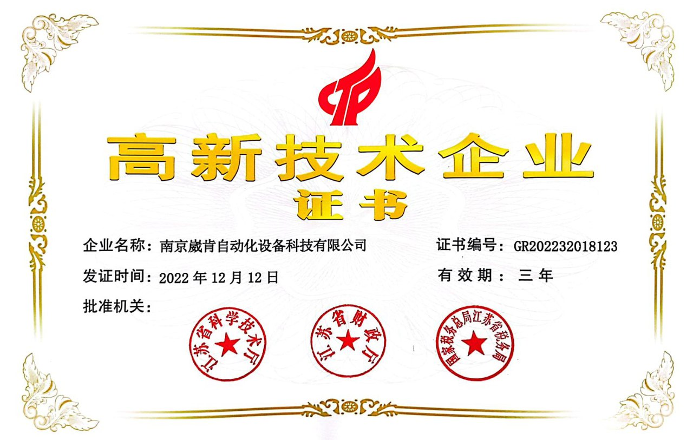
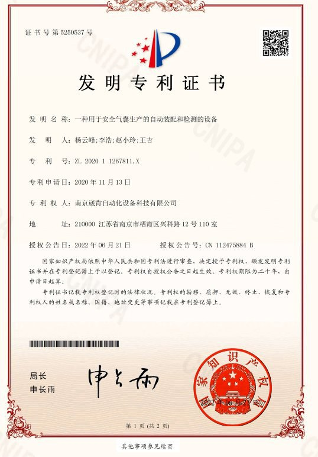
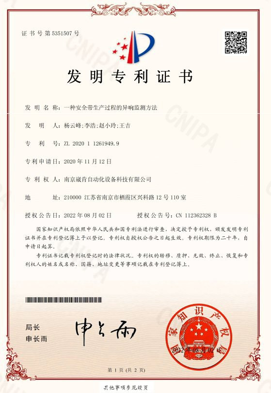
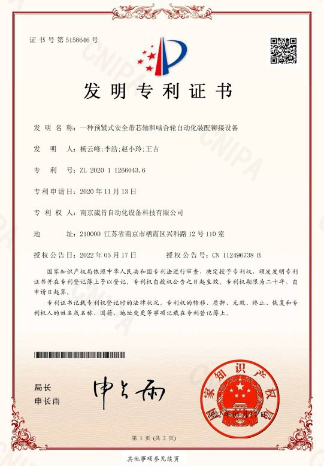
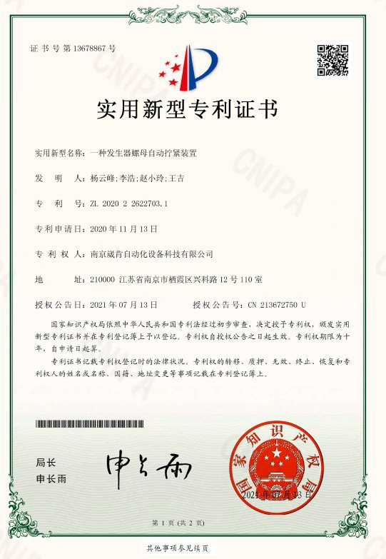
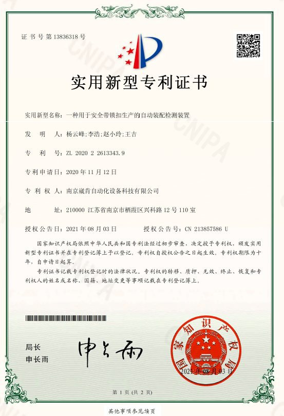
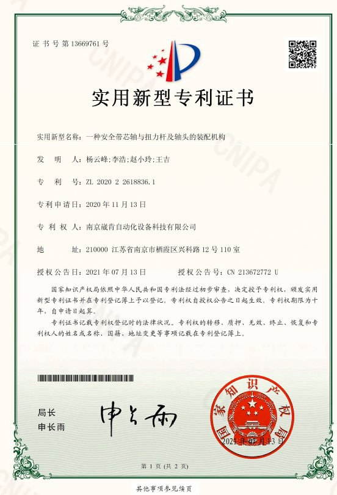

首页 / 关于我们
关于南京崴肯自动化
Nanjing We-Can Automation Tech. Co., Ltd. · 国家高新技术企业 · 深耕汽车安全带、安全气囊与方向盘非标自动化及试验设备。

GR202232018123 南京市浦口区步月路133号江苏可成科技园A幢1楼
一支懂精益制造与 TS16949 的
资深非标自动化团队
品质 · 诚信 · 合作（Quality · Sincerity · Co-operation）
南京崴肯自动化设备科技有限公司成立于 2019 年 8 月，注册资本 200 万元，坐落于南京市浦口区步月路 133 号江苏可成科技园 A 幢 1 楼。
公司现有员工 30 余人，主要管理团队均拥有十余年非标自动化行业经验，深耕汽车零部件行业——尤其是安全带、安全气囊生产与试验设备、方向盘装配线及非标焊接自动化集成，拥有丰富的设计开发、工艺设计与生产管理经验。
团队熟悉汽车零部件行业质量体系 TS16949，在质量管控、防错追溯、效率提升和精益工艺改善方面积累了扎实的工程实践。
核心管理与技术团队
汇聚国际头部被动安全制造体系（Autoliv）及国内知名非标自动化企业的实战骨干。
杨云峰
负责公司整体运营、战略规划及核心业务发展。
李浩
负责公司总体技术方案设计、技术评审与客户技术交流。
孙豹
负责具体技术方案制定、工程实施落地与工艺方案持续优化。
邱晓敏
负责核心供应商资源建设、元器件采购管理及公司内部项目进度统筹。
国家高新技术企业与自主专利
2022 年 12 月获批国家级高新技术企业，累计取得 20 余项专利（含 3 项国家发明专利）与 3 项软件著作权。


发明 · 预紧式安全带铆接 ZL 2020 1 1266043.6
发明 · 气囊自动装配检测 ZL 2020 1 1267811.X
发明 · 安全带异响监测 ZL 2020 1 1261949.9
实用 · 发生器螺母拧紧 ZL 2020 2 2622703.1
实用 · 锁扣自动装配检测 ZL 2020 2 2613343.9
实用 · 芯轴扭力杆装配 ZL 2020 2 2618836.1发展目标与服务宗旨
致力于服务汽车零部件行业，助力客户持续提升生产效率、质量管控水平与精益制造能力。
质量第一
坚持工序、工装、传感器三重防错与全链路数据存盘追溯，以符合 TS16949 的工程标准把控每一台设备。
用心为客户着想
从客户实际产品与节拍痛点出发，实事求是评估工艺方案，提供最佳性价比的非标装备与交付服务。
共同发展 · 共赢
与芜湖金安世腾、浙江松原、江苏锦恒等行业伙伴长期并肩，持续迭代产线效率，实现客户与崴肯共同成长。